Soru 1Cevap: C
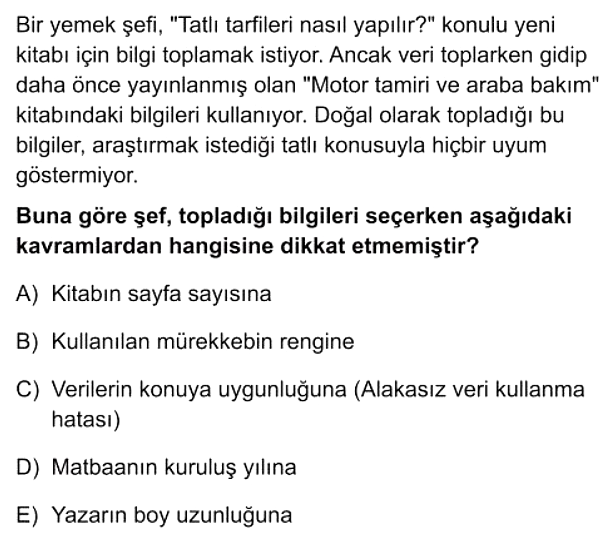
Çözüm
- Şefin konusu tatlı tarifleri, kullandığı kaynak motor tamiri kitabıdır.
- Kaynak araştırma konusuyla örtüşmüyor.
- Dikkat edilmeyen kavram: verilerin konuya uygunluğu → C.
Cevap: C
Soru 2Cevap: A
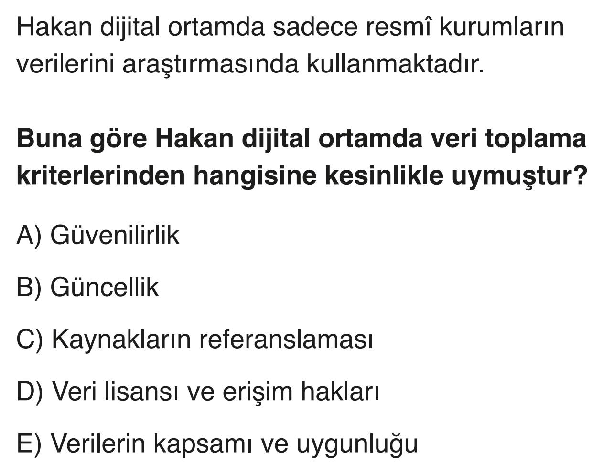
Çözüm
- Resmî kurumlar güvenilir veri kaynaklarıdır.
- Hakan yalnızca resmî kurumların verilerini kullanmıştır.
- Kesinlikle uyduğu kriter: güvenilirlik → A.
Cevap: A
Soru 3Cevap: D
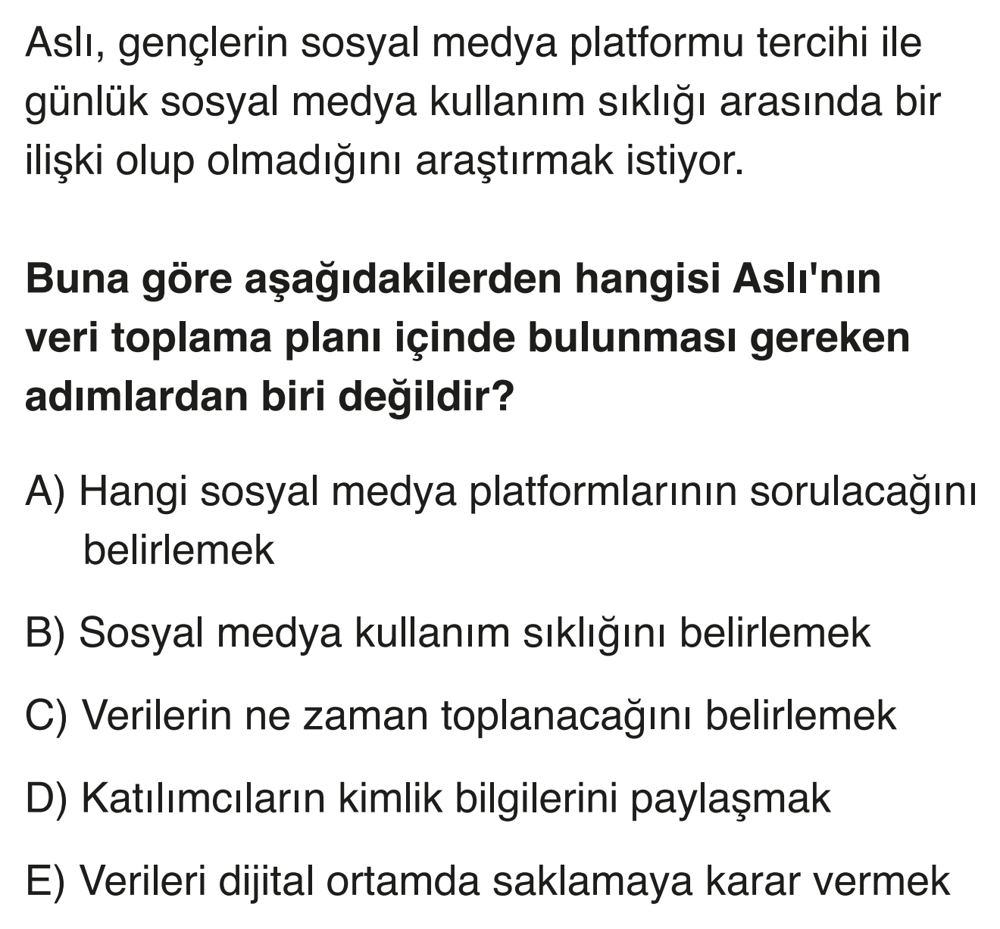
Çözüm
- Platformları ve kullanım sıklığını belirlemek değişkenlerin belirlenmesidir.
- Verilerin ne zaman toplanacağı ve nasıl saklanacağı planın aşamalarıdır.
- Katılımcıların kimlik bilgilerini paylaşmak gizlilik ilkesine aykırıdır → D.
Cevap: D
Soru 4Cevap: B
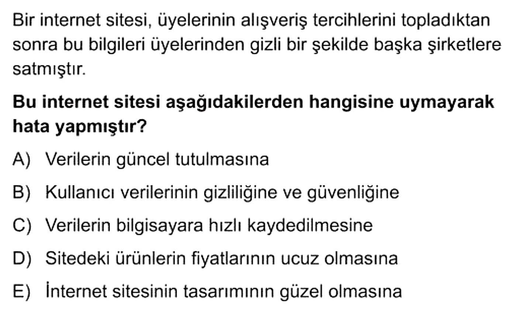
Çözüm
- Site üyelerin bilgilerini izinsiz olarak başka şirketlere satmıştır.
- Bu, kişisel verilerin korunması ilkesinin ihlalidir.
- Uyulmayan ilke: verilerin gizliliği ve güvenliği → B.
Cevap: B
Soru 5Cevap: E
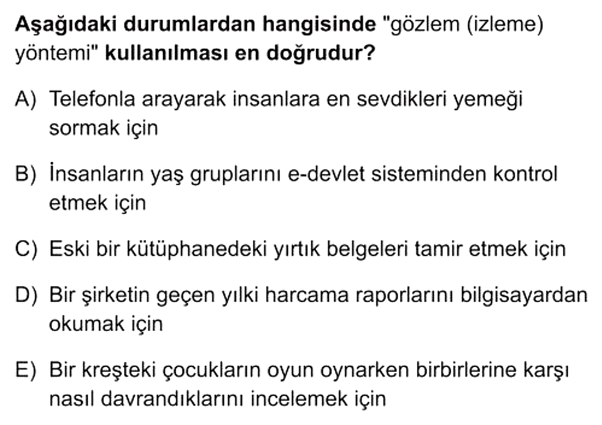
Çözüm
- Gözlem, olayların doğal ortamında izlenerek veri toplanmasıdır.
- Telefonla sorma anket/görüşme, e-devlet ve raporlar ikincil veri, belge tamiri veri toplama değildir.
- Kreşteki çocukların oyun davranışını izlemek gözlemdir → E.
Cevap: E
Soru 6Cevap: B
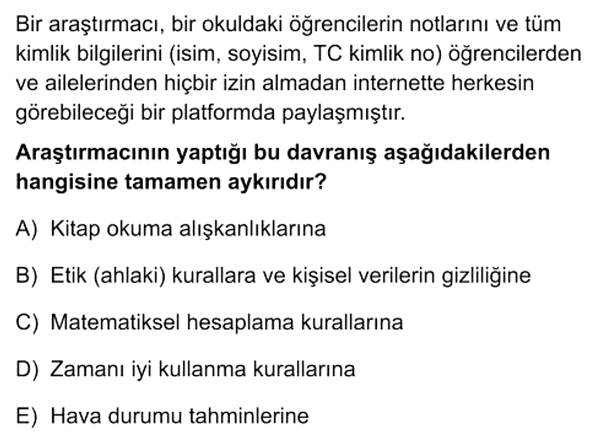
Çözüm
- Araştırmacı kişisel kimlik bilgilerini izin almadan herkese açık paylaşmıştır.
- Katılımcıların izni ve bilgilerin gizliliği etik kuralların temelidir.
- Davranış etik kurallara ve kişisel verilerin gizliliğine aykırıdır → B.
Cevap: B
Soru 7Cevap: A
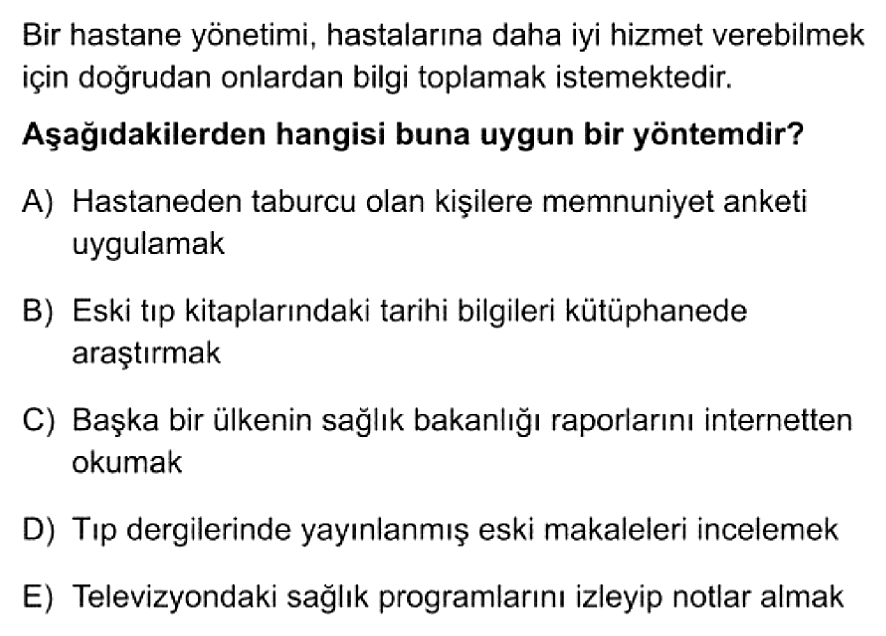
Çözüm
- Yönetim bilgiyi doğrudan hastalardan almak istiyor → birincil veri.
- Kitaplar, raporlar, dergiler ve televizyon programları başkalarının hazırladığı ikincil kaynaklardır.
- Taburcu olan hastalara anket uygulamak uygundur → A.
Cevap: A
Soru 8Cevap: B
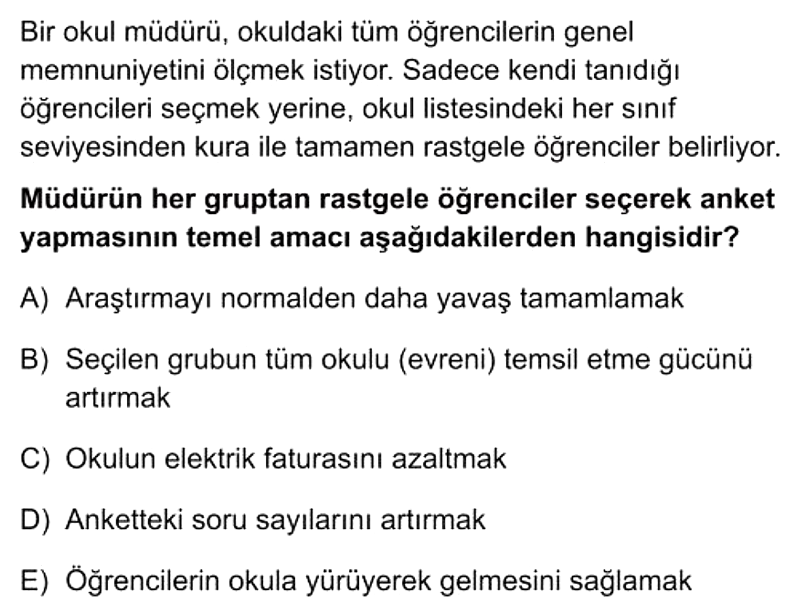
Çözüm
- Müdür tanıdığı öğrencileri seçseydi örneklem taraflı olurdu.
- Her sınıftan kura ile seçim, her öğrenciye eşit şans verir.
- Amaç örneklemin evreni temsil gücünü artırmaktır → B.
Cevap: B
Soru 9Cevap: C
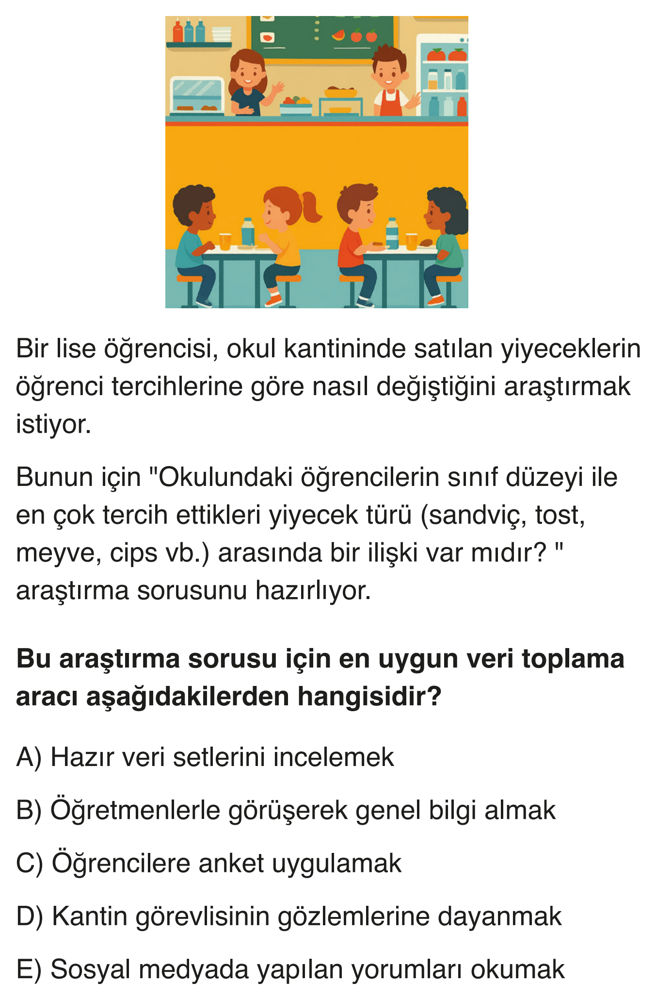
Çözüm
- Araştırma öğrencilerin sınıf düzeyi ve yiyecek tercihini soruyor.
- Bu bilgi doğrudan öğrencilerden kısa sürede alınmalıdır.
- En uygun araç öğrencilere anket uygulamaktır → C.
Cevap: C
Soru 10Cevap: B
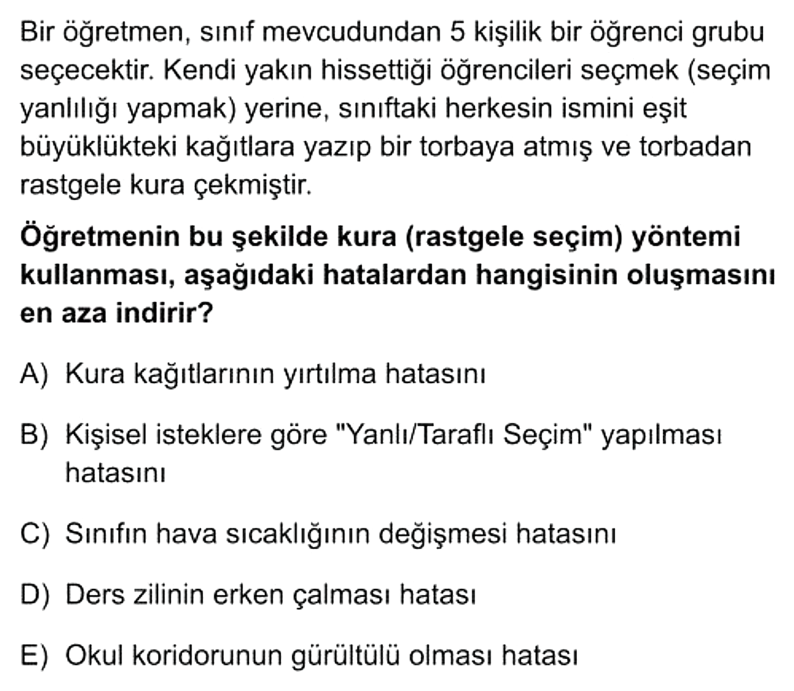
Çözüm
- Öğretmen yakın hissettiği öğrencileri seçseydi seçim taraflı olurdu.
- Kura ile herkesin seçilme şansı eşitlenir.
- Önlenen hata: yanlı/taraflı seçim → B.
Cevap: B
Soru 11Cevap: A
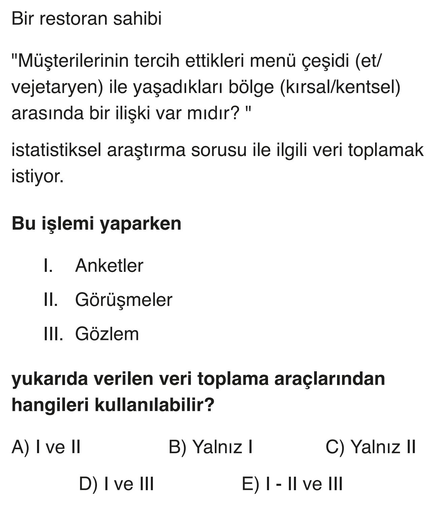
Çözüm
- Menü tercihi ve yaşanılan bölge kişilere sorularak öğrenilir.
- Anket ve görüşme bu bilgileri doğrudan toplar.
- Gözlemle kişinin yaşadığı bölge ve genel tercihi belirlenemez. Cevap: I ve II.
Cevap: A
Soru 12Cevap: B
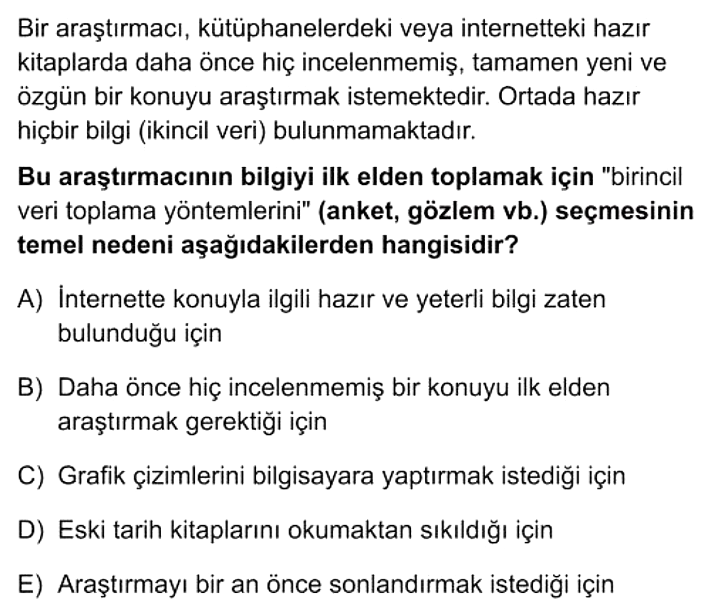
Çözüm
- Konu daha önce hiç incelenmediği için hazır (ikincil) veri yoktur.
- Bu durumda araştırmacı veriyi kendisi toplamak zorundadır.
- Birincil yöntem seçmesinin nedeni B'dir.
Cevap: B
Soru 13Cevap: B
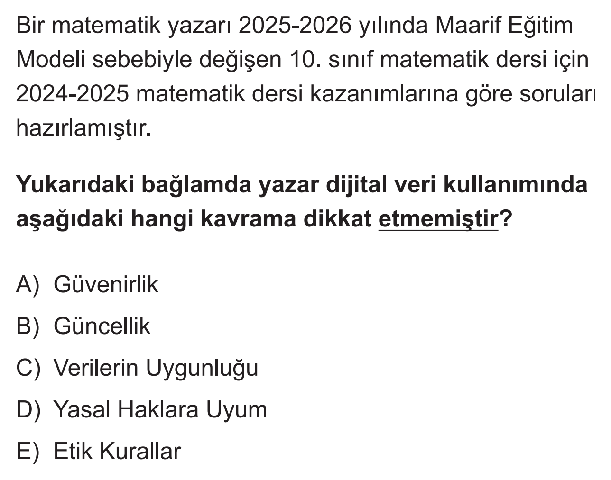
Çözüm
- Yazar 2025–2026 için yeni kazanımlara göre soru hazırlamalıydı.
- Bir önceki yılın (2024–2025) kazanımlarını kullanmıştır.
- Dikkat edilmeyen kavram: güncellik → B.
Cevap: B
Soru 14Cevap: A
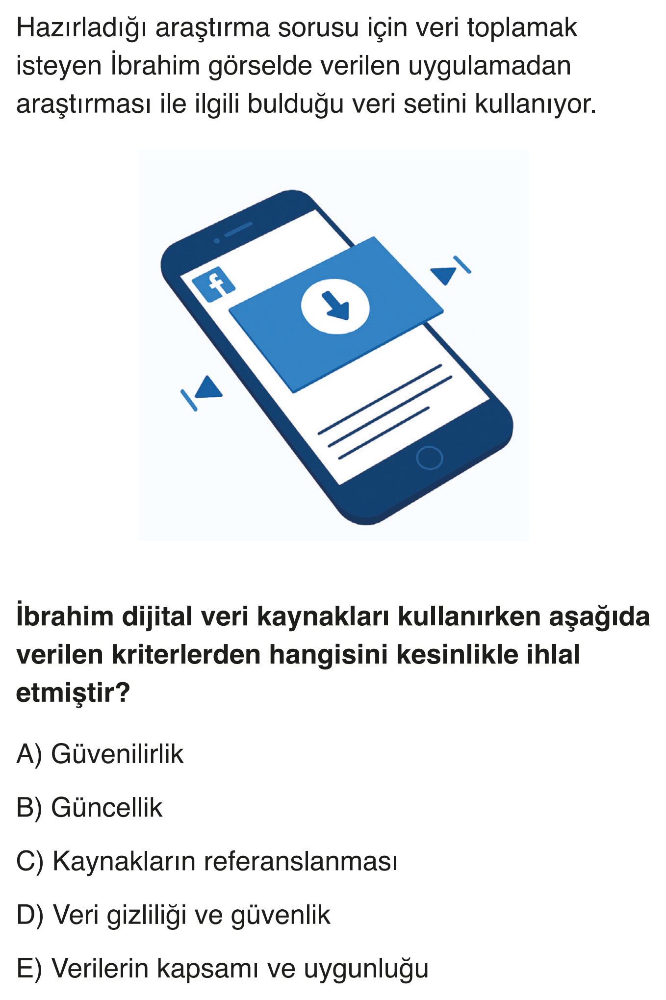
Çözüm
- Görselde veri bir sosyal medya uygulamasından indiriliyor.
- Sosyal medya kaynaklı veriler doğrulanmamış olabilir; güvenilir kurum verisi değildir.
- Kesinlikle ihlal edilen kriter: güvenilirlik → A.
Cevap: A
Soru 15Cevap: C
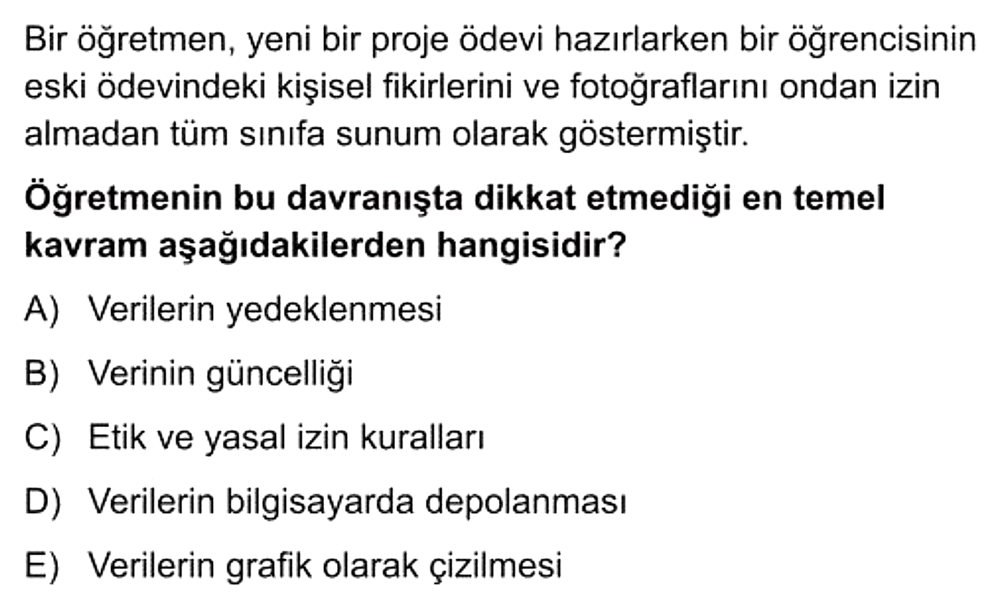
Çözüm
- Öğrencinin kişisel fikir ve fotoğrafları izinsiz kullanılmıştır.
- Kişisel verilerin paylaşımı için izin alınması etik ve yasal bir zorunluluktur.
- Dikkat edilmeyen kavram: etik ve yasal izin kuralları → C.
Cevap: C
Soru 16Cevap: C
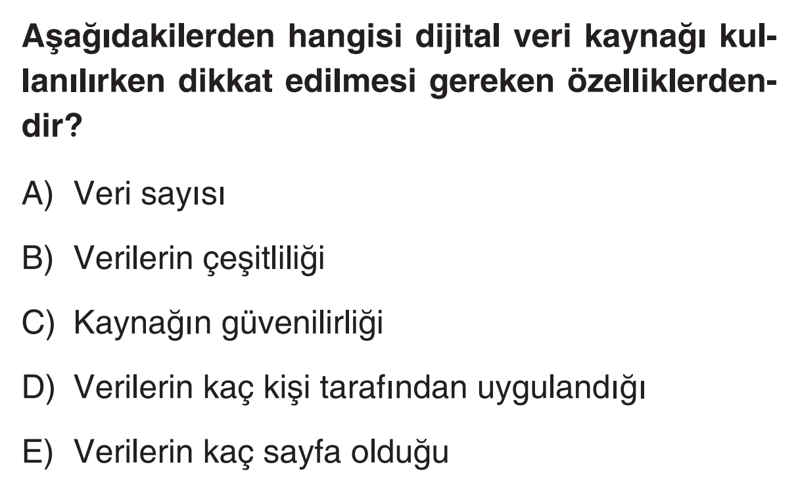
Çözüm
- Dijital veri kullanılırken kaynağın güvenilirliği, güncellik, kapsam, lisans, referans, gizlilik dikkate alınır.
- Veri sayısı, çeşitlilik, kişi sayısı ve sayfa sayısı bu ölçütler arasında yoktur.
- Cevap: kaynağın güvenilirliği → C.
Cevap: C
Soru 17Cevap: B
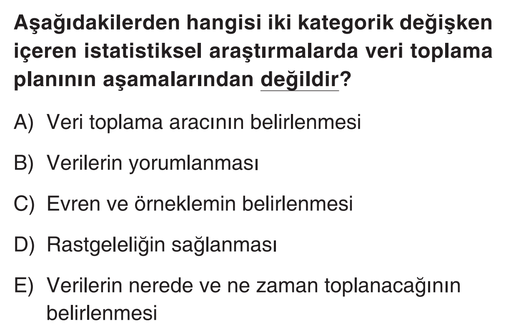
Çözüm
- Veri toplama planı: araç, evren–örneklem, rastgelelik, değişkenler, nerede/ne zaman/nasıl, kayıt, gizlilik.
- Verilerin yorumlanması analiz aşamasında yapılır.
- Plan aşaması olmayan → B.
Cevap: B
Soru 18Cevap: B
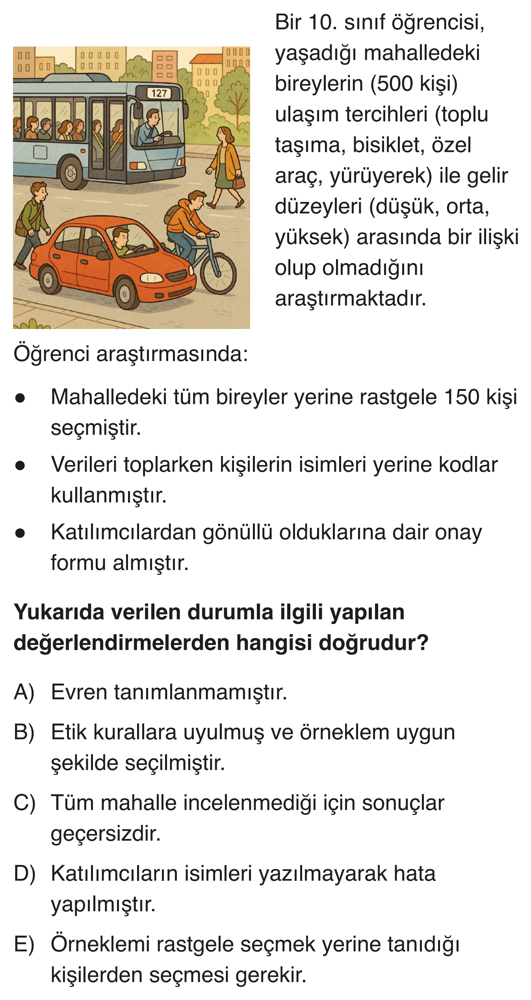
Çözüm
- Evren mahalledeki 500 kişidir; örneklem rastgele seçilen 150 kişidir.
- İsim yerine kod kullanmak ve gönüllülük onayı almak etik kurallara uygundur.
- Etik kurallara uyulmuş ve örneklem uygun seçilmiştir → B.
Cevap: B
Soru 19Cevap: E
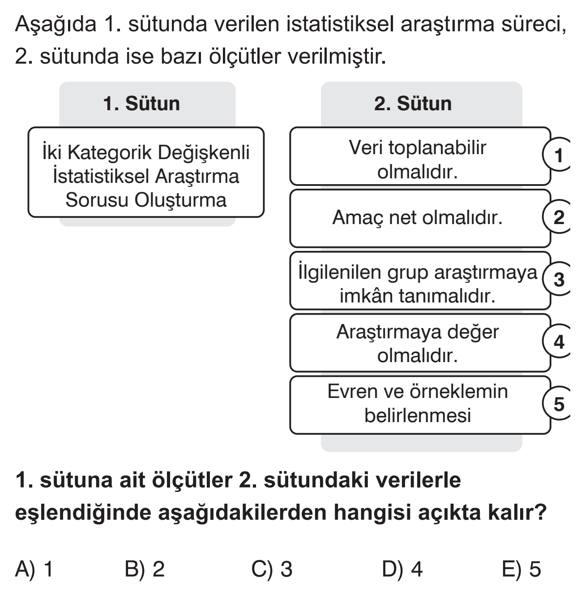
Çözüm
- Araştırma sorusu ölçütleri: veri toplanabilir, amaç net, ilgilenilen grup araştırmaya imkân tanımalı, araştırmaya değer olmalı.
- "Evren ve örneklemin belirlenmesi" veri toplama planının aşamasıdır.
- Açıkta kalan 5 → E.
Cevap: E
Soru 20Cevap: E
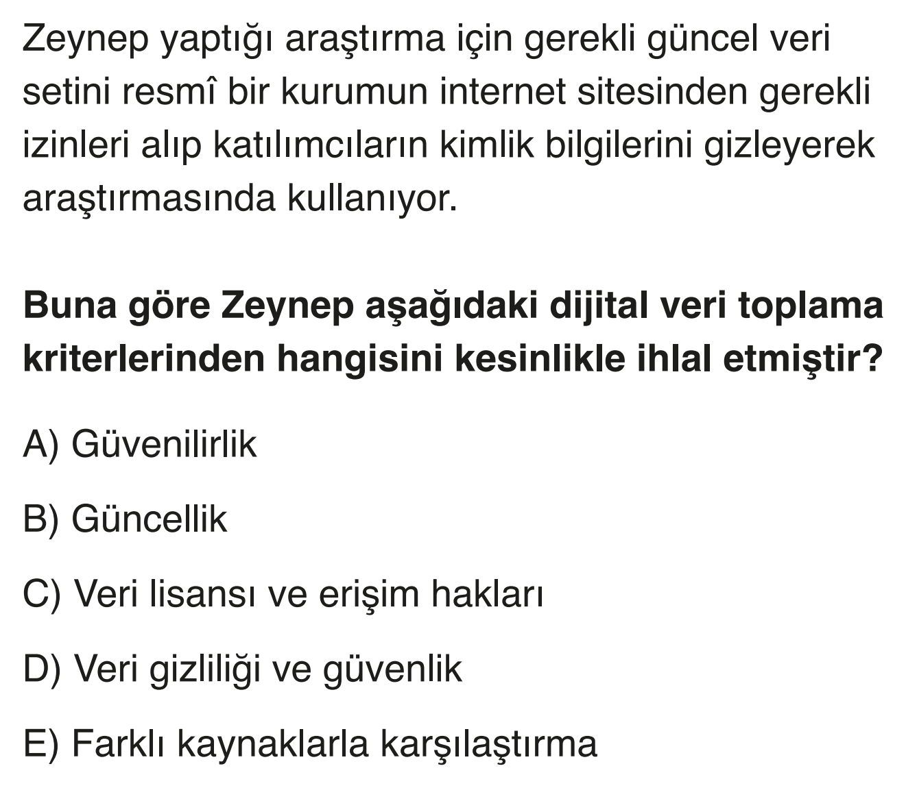
Çözüm
- Zeynep resmî kurumun güncel verisini, izin alarak ve kimlikleri gizleyerek kullanmıştır (A, B, C, D'ye uymuştur).
- Ancak tek bir kaynağa dayanmış, verileri başka güvenilir kaynaklarla kıyaslamamıştır.
- Kesin ihlal: farklı kaynaklarla karşılaştırma → E.
Cevap: E